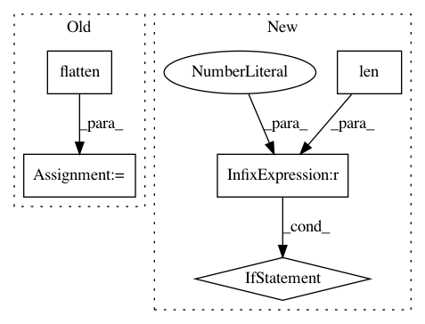

ed7782f0f59f1eef6453f47633fe9e15bda00f84,deepchem/models/tensorflow_models/__init__.py,TensorflowGraphModel,fit,#TensorflowGraphModel#Any#Any#Any#Any#Any#,298
Before Change
loss = fetched_values[-1]
avg_loss += loss
y_pred = np.squeeze(np.array(output))
y_b = y_b.flatten()
n_batches += 1
if epoch % checkpoint_interval == checkpoint_interval - 1:
saver.save(sess, self._save_path, global_step=epoch)
avg_loss = float(avg_loss) / n_batches
After Change
avg_loss += loss
index += 1
index_in_epoch += 1
if len(epoch_end_indices) > 0 and index >= epoch_end_indices[0]:
// We have reached the end of an epoch.
if epoch % checkpoint_interval == checkpoint_interval - 1:
saver.save(sess, self._save_path, global_step=epoch)
avg_loss = float(avg_loss) / index_in_epoch
log("Ending epoch %d: Average loss %g" % (epoch, avg_loss),
self.verbose)
index_in_epoch = 0
avg_loss = 0.0
del epoch_end_indices[0]
except tf.errors.OutOfRangeError:
// We have reached the end of the data.
pass
// Always save a final checkpoint when complete.
In pattern: SUPERPATTERN
Frequency: 4
Non-data size: 5
Instances
Project Name: deepchem/deepchem
Commit Name: ed7782f0f59f1eef6453f47633fe9e15bda00f84
Time: 2017-03-23
Author: peter.eastman@gmail.com
File Name: deepchem/models/tensorflow_models/__init__.py
Class Name: TensorflowGraphModel
Method Name: fit
Project Name: scikit-image/scikit-image
Commit Name: b0b629c6be895dd6b301643daf5a3473ca28a714
Time: 2016-08-24
Author: juan.n@unimelb.edu.au
File Name: skimage/morphology/watershed.py
Class Name:
Method Name: watershed
Project Name: GPflow/GPflow
Commit Name: f4559a3d47510f776b3e38d5aceb07ee4b4b0ea9
Time: 2017-11-24
Author: james@prowler.io
File Name: gpflow/transforms.py
Class Name: DiagMatrix
Method Name: backward
Project Name: awslabs/mxboard
Commit Name: d89b2f6fca9423f2d1e8fb77670fd1423f52191f
Time: 2018-12-14
Author: jessebrizzi@users.noreply.github.com
File Name: python/mxboard/utils.py
Class Name:
Method Name: _make_metadata_tsv